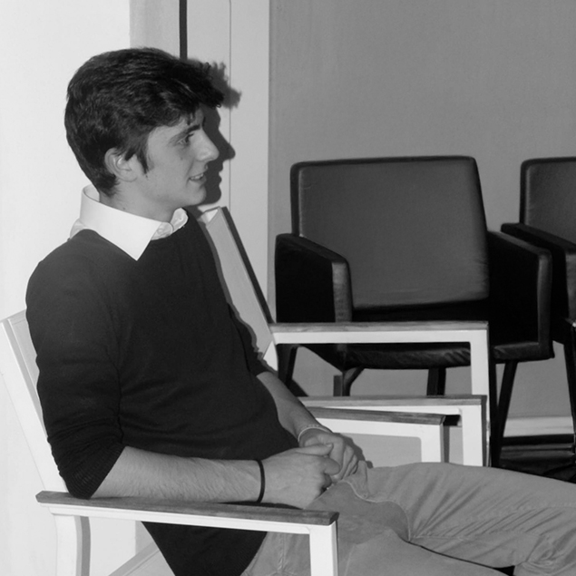
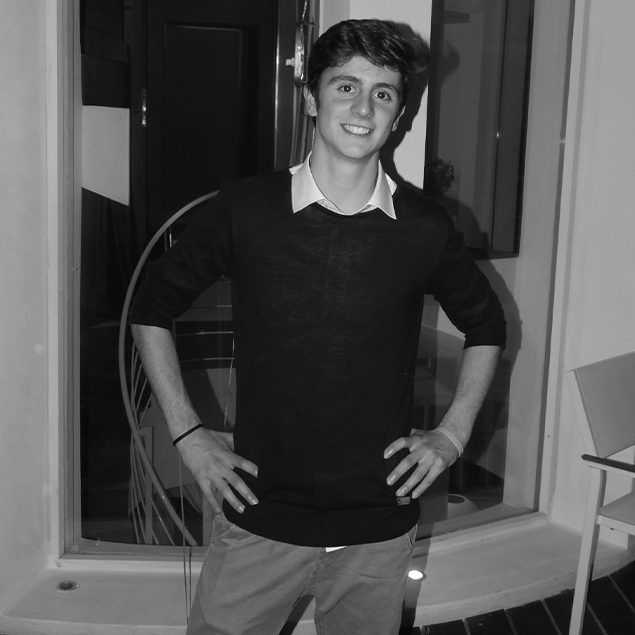

Mi chiamo Marco Centino e mi occupo di Graphic Design e comunicazione visiva, con l'obiettivo di costruire identità chiare, coerenti e riconoscibili. Le mie passioni, ovvero sport, musica, viaggi e cinema, influenzano il mio approccio creativo, permettendomi di sviluppare soluzioni visive attuali e mirate. Dopo il diploma al liceo scientifico, ho intrapreso un percorso triennale in Graphic Design presso l’Istituto Pantheon di Roma, dove ho affinato sia le competenze tecniche che la capacità di trasformare idee in progetti concreti, con un metodo progettuale strutturato e orientato al risultato.
Sviluppo progetti che spaziano dal branding alla tipografia, dall’advertising al packaging fino alle illustrazioni, costruendo soluzioni visive pensate per comunicare in modo efficace e distinguersi. Integro anche la produzione video, utilizzando Premiere, DaVinci Resolve e After Effects, per offrire una comunicazione completa e versatile su più canali. I software che padroneggio maggiormente sono Photoshop, Illustrator e InDesign, strumenti che utilizzo quotidianamente per garantire qualità e coerenza in ogni progetto. Seguo ogni lavoro con attenzione e precisione, trasformando idee in risultati concreti e curati in ogni dettaglio.
